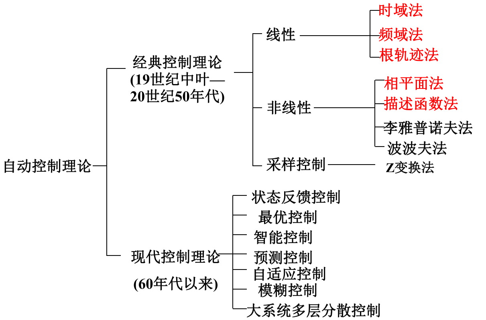
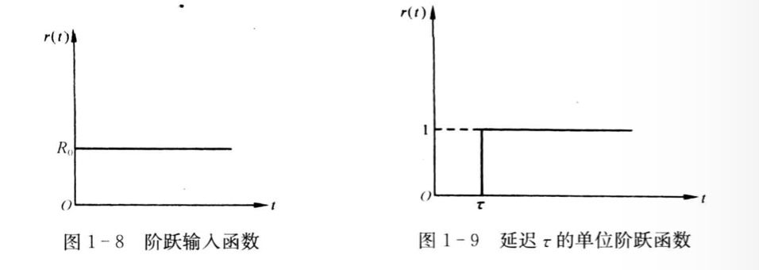
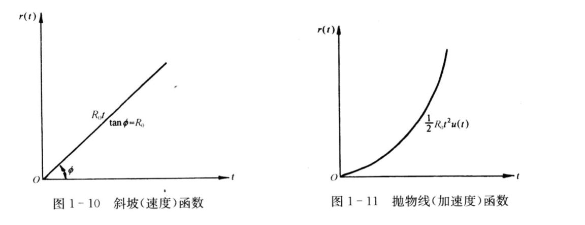

自动控制原理 Ch1 ——
自动控制的一般概念
历史
- 一些例子
瓦特蒸汽机速度控制
函数记录仪
锅炉液位
磁盘驱动读取系统
基本概念
- 系统
由一些元部件按一定要求连接并具有某一特定功能的整体。 - 自动控制
在没有人直接干预的情况下，通过控制装置使被控对象或过程自动按照预定的规律进行，使之具有一定的状态和性能。 - 反馈控制系统组成
-
测量元件｜反馈元件
-
给定元件｜输入变换元件
-
比较元件
-
放大元件｜放大变换元件
-
执行元件
-
校正元件
-
被控对象
-
输入信号｜参考输入｜给定量（包括控制信号和扰动信号）
-
输出信号｜被控量
-
扰动信号
-
反馈信号｜主反馈信号/局部反馈信号
-
误差信号（参考输入与主反馈信号之差）
这里有一些注意。本概念取自上交的书，然而从ppt上可以看到，参考输入与主反馈信号之差被称为
偏差信号，而误差信号被定义为系统输出量的实际值与期望值之差，这与上交书的注释中标明的物理意义相一致，但是上交书也说了，误差信号这么定义，可以反应系统的稳定性。具体分析问题时，如有概念模糊，可以再次确定。wyw很久以后意识到，第三章讲误差的时候重复了这个内容。
-
自动控制理论的内容
自动控制理论通常可分为经典控制理论、现代控制理论和智能控制理论。
- 经典控制理论：以
传递函数为基础，研究单输入—单输出、线性定常系统的性能和设计。 - 现代控制理论：以
状态空间法为基础，研究多输入—多输出、时变、非线性等控制系统的性能和设计。 - 智能控制理论：以人工智能理论为基础，研究具有模糊性、不确定性、不完全性、偶然性的系统的性能与设计。
1 | - 经典控制理论 |

自动控制系统的分类
按信号传递路径分类（控制方式）
-
开环控制系统：
被控制量（输出量）对系统的控制量（输入量）没有影响。
开环控制系统的特点：- 作用信号由输人到输出单方向传递，不对输出量进行任何检测，或虽然进行检测，但对系统工作不起控制作用。
- 外部条件和系统内部参数保持不变时,对于一个确定的输入量，总存在一个与之对应的输出量。
- 控制精度取决于控制器及被控对象的参数稳定性，容易受干扰影响，缺乏精确性和适应性。例如前面讲过的炉温控制，如果电源电压波动、电阻参数变化或周围环境温度变化，都会导致炉温偏离控制值。
-
闭环控制系统：也称反馈控制系统
- 反馈：输出量通过适当的测量装置将测量信号的全部或一部分返回输入端，使之与输入量进行比较。
- 反馈控制系统：基于负反馈(输人量与反馈量相减)基础 上的”检测误差，用以纠正误差”这一原理组成的系统(因为此类系统信息的传递途径有一个闭合的环路，所以也称
闭环控制系统）。
闭环控制系统与开环控制系统的主要差别在于闭环控制系统有一条从系统输出端经过测量元件到输人端的反馈通路。
闭环控制系统的特点：
- 由
负反馈构成闭环，利用误差信号进行控制。 - 系统元件参数配合不当，容易产生振荡，使系统不能正常工作。因而，存在
稳定性问题。 - 当系统稳定时，对于外界扰动和系统内参数的变化等引起的误差能够自动纠正。
-
顺馈控制方式（很少见）
自动控制理论主要研究闭环控制系统。
按控制作用的特点分类（按给定变量的变化规律）
- 恒值控制系统（自动镇定系统）
克服扰动影响，使输出量以一定精度接近给定值，给定值一般不变或变化缓慢。 - 随动系统（自动跟踪系统）
输出量以一定精度跟随给定量的变化，要快速、准确。 - 程序控制系统
被控制量按照事先给定的规律或程序变化。系统工作要可靠，满足一定的控制精度要求。
按系统性能分类
-
线性连续控制系统
满足叠加性和齐次性（比例）
这类系统可以用线性微分方程描述，其一般形式为：：被控量（输出）
：系统输入量
定常/时变系统：系数是否为常数
该系统也可根据控制作用特点继续分类。 -
线性定常离散控制系统
离散系统是指系统的某处或多处的信号为脉冲序列或数码形式，因而信号在时间上是离散的。
上课没讲所以暂时空一下。 -
非线性控制系统
系统中只要有一个元部件的输入-输出特性是非线性的，这类系统就成为非线性控制系统，这时，要用非线性微分（或差分）方程描述其特性。
非线性方程的特点：系数与变量有关，或者方程中含有变量及其导数的高次幂或乘积项。例如：$$y’’(t)+y(t)y’(t)+y^2(t)=r(t)$$
分类方式总结

| 按给定信号的形式 | 恒值系统 | 随动系统 |
|---|---|---|
| 按系统是否满足叠加原理 | 线性系统 | 非线性系统 |
| 按系统参数是否随时间变化 | 定常系统 | 时变系统 |
| 按信号传递的形式 | 连续系统 | 离散系统 |
| 按输入输出变量的多少 | 单变量系统 | 多变量系统 |
| 瞬间特性是否与空间分布特性相关 | 集总参数 | 分布参数 |
对控制系统的基本要求
- 稳定性
稳定性是由系统结构和参数决定的，与外界因素无关。
稳定裕量：系统参数发生某些变化时，也能够使系统保持稳定的工作状态。 - 快速性｜动态特性
稳定的控制系统受输入信号作用，达到稳态的过程，称为动态过程或过渡过程。
过渡时间短，过程平稳、振荡幅度小。 - 准确性|稳态特性
过渡过程结束后，系统的误差。
控制系统的经典测试信号
为什么要使用典型测试信号
- 实际系统的输入信号常具有不确定性，而且其函数形式往往不能以解析式表示。
- 分析和设计控制系统需要有一个对各种系统进行比较的基准。
- 系统对典型测试信号的响应特性与系统对实际输入信号的响应之问存在一定的关系。实际输入信号往往是一种或多种典型测试信号的组合。
- 典型测试信号是简单的时间的函数，便于对控制系统进行数学处理和实验分析。
选取典型测试信号主要考虑
- 选取输人信号的典型形式应大致反映系统的实际工作情识。
- 要从系统工作最不利的情况出发来选取典型测试信号。
- 选取的典型信号要尽可能简单。
可选作典型外作用的函数应具备以下条件：
这种函数在现场或实验室中容易实现。
控制系统在这种两数作用下的性能应代表在实际工作条件下的性能。
这种函数的数学表达式简单，便于理论计算。
目前，在控制工程设计中常用的典型外作用函数有阶跃函数、斜坡函数、脉冲函数
以及正弦函数等确定性函数，此外，还有伪随机函数。
典型测试信号
-
阶跃输入函数
表示参考输入量的一种瞬变。
其中为常值，为单位阶跃函数。
延迟的单位阶跃函数：阶跃函数占有很宽的
频带。作用等价于宽频域内无数正弦信号的合成结果。
 -
斜坡（速度）输入函数
表示一匀速信号，用于检测系统匀速运动的性能。为常值，为单位速度函数。
 -
抛物线（加速度）输入函数
表示匀加速信号，由速度函数对积分而得。 -
脉冲输入函数
脉冲宽度：，一般要求，为常值。
当时称理想单位脉冲，表达式：单位脉冲函数可看作单位阶跃函数的导数。
-
正弦函数
式中：为振幅，为初相位，为震荡角频率。
正弦函数容易获得，因而十分有用，若求得系统对所有频率的正弦函数响应特性，则可准确的确定整个系统的特性。